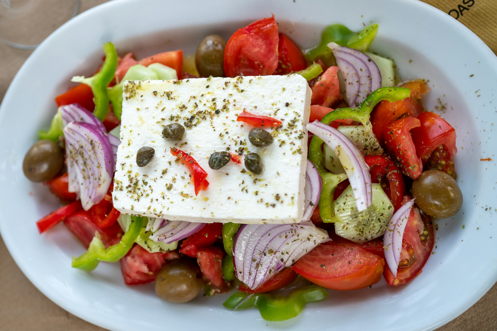

Greek Salad

Description
Greek salad, known as "Horiatiki" in Greece, is a classic
Mediterranean dish that captures the essence of fresh, vibrant flavors. It
typically consists of ripe tomatoes, crisp cucumbers, green bell peppers,
red onions, Kalamata olives, and creamy feta cheese, all drizzled with
extra virgin olive oil and a sprinkle of oregano. The salad is refreshing
and light, often served as a side dish or starter, and embodies the
simplicity and healthiness of Greek cuisine. It's a perfect balance of
salty, tangy, and crunchy elements, making it a favorite in both Greek and
international kitchens.
Ingredients
- 3 ripe tomatoes, cut into wedges
- 1 large cucumber, sliced
- 1 green bell pepper, sliced into rings
- 1/2 red onion, thinly sliced
- 1/2 cup Kalamata olives
- 200 grams (7 oz) feta cheese, cut into blocks or crumbled
- 3 tablespoons extra virgin olive oil
- 1 teaspoon dried oregano
- Salt to taste (optional)
- 1 tablespoon red wine vinegar (optional)
Steps
- Prepare the Vegetables:
- Cut 3 ripe tomatoes into wedges
- Slice 1 large cucumber into rounds or half-moons
- Slice 1 green bell pepper into thin rings
- Thinly slice 1/2 red onion
- Assemble the Salad:
-
In a large salad bowl, combine the tomatoes, cucumbers, green bell
pepper, and red onion
- Add 1/2 cup of Kalamata olives to the bowl
- Add the Feta Cheese:
-
Place 200 grams (7 oz) of feta cheese, either in blocks or crumbled,
on top of the salad
- Season and Dress:
- Drizzle 3 tablespoons of extra virgin olive oil over the salad
- Sprinkle 1 teaspoon of dried oregano evenly across the top
- Add salt to taste, if desired.
- Optional:
-
Drizzle 1 tablespoon of red wine vinegar for an extra tangy flavor
- Serve:
-
Toss the salad lightly, ensuring all ingredients are evenly coated
- Serve immediately as a refreshing side dish or appetizer